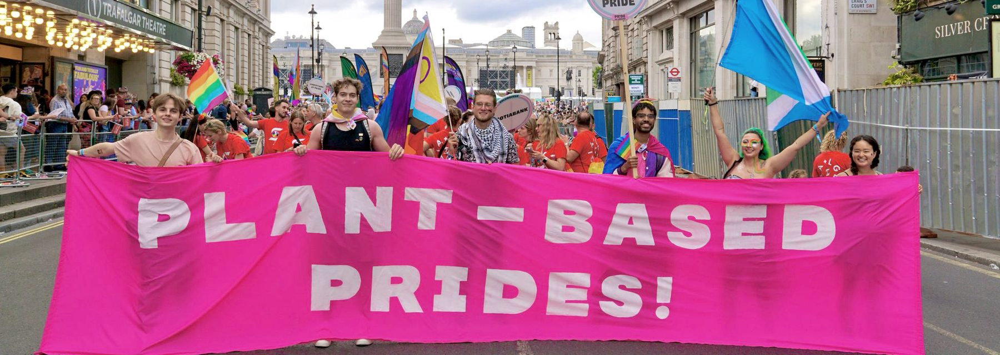

The global LGBTQ+ community is at statistically greater risk of harm from climate change.
Several academic studies show that due to a wide range of issues - from increased rates of housing insecurity and homelessness to difficulty accessing appropriate gender-based care in disasters, among MANY others - our community is at greater risk from the harms that climate change is beginning to present.
The science is also clear that animal agriculture is the largest cause of environmental destruction, and one of the largest sources of greenhouse gas emissions, globally.
As such, we believe Pride has a duty to protect the global community it represents, and in our view it is contradictory to demand equality and justice for the LGBTQ+ community while at the same time ignoring the consequences that come with providing food heavy in meat and dairy.
Speaking up for those without a voice.
Central to much of the Pride movement's ethos is speaking up for those without a voice and fighting for the rights of marginalised communities. Although we are not a vegan movement, and it is not our goal to equate human and animal suffering, the systematic exploitation of animals for food when other options are available (scientifically as, or more, nutritious and healthy) is, we believe, at odds with this core principle.
We believe that extending these values to the choices we make is consistent with Pride, and provides a huge opportunity to alleviate at least some of the suffering that comes with the food we choose to eat.
A statistically higher risk
The LGBTQIA+ community is more likely to experience poverty, discrimination, homelessness and violence — all factors that compound the harm caused by climate-related disasters.
"Marginalised communities such as LGBTQIA2S+ are most affected by the climate crisis because they are more likely to experience poverty, discrimination, and violence." During Hurricane Katrina, trans people were turned away from emergency shelters, and the ones who did get in faced discrimination. — Greenpeace International
"Our research has demonstrated that LGBTQ+ people are disproportionately affected by disasters, both because of preexisting systemic discrimination and because of discriminatory response policies." — Issues in Science and Technology
"LGBTQ+ people are more likely to live in areas with poor infrastructure, worse-built environments, and fewer resources." — Williams Institute, UCLA School of Law
Pride is responsible for the greatest expansion in LGBTQIA+ rights ever seen — but events can carry substantial environmental footprints, and the community they serve is disproportionately exposed to the consequences. — Plant-Based Prides
Switching to plant-based food is often the single most effective way to immediately reduce an event's environmental impact
"Our results demonstrate that plant-based alternative rich diets substantially reduce greenhouse gas emissions (30–52%), land use (20–45%), and freshwater use (14–27%), with the vegan diet showing the highest reduction potential." — Nature Communications, 2024
"A vegan diet is probably the single biggest way to reduce your impact on planet Earth — not just greenhouse gases, but global acidification, eutrophication, land use, and water use." — Joseph Poore, University of Oxford
"Phasing out animal agriculture over the next 15 years would have the same effect as a 68% reduction of carbon dioxide emissions through the year 2100." This emphasises the significant climate mitigation potential of transitioning to plant-based diets. — Stanford University modelling study (2022), published in PLOS Climate